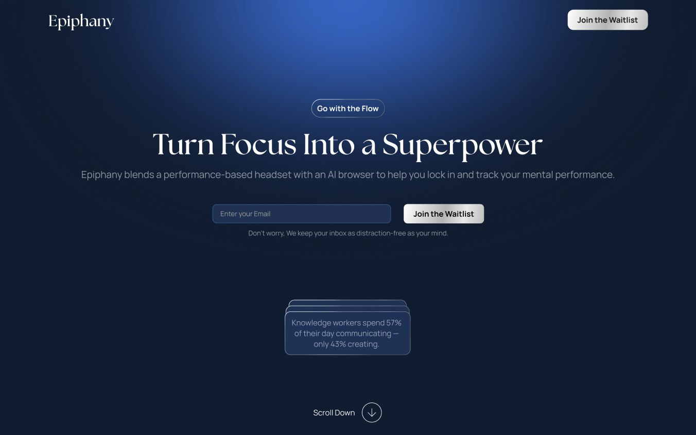
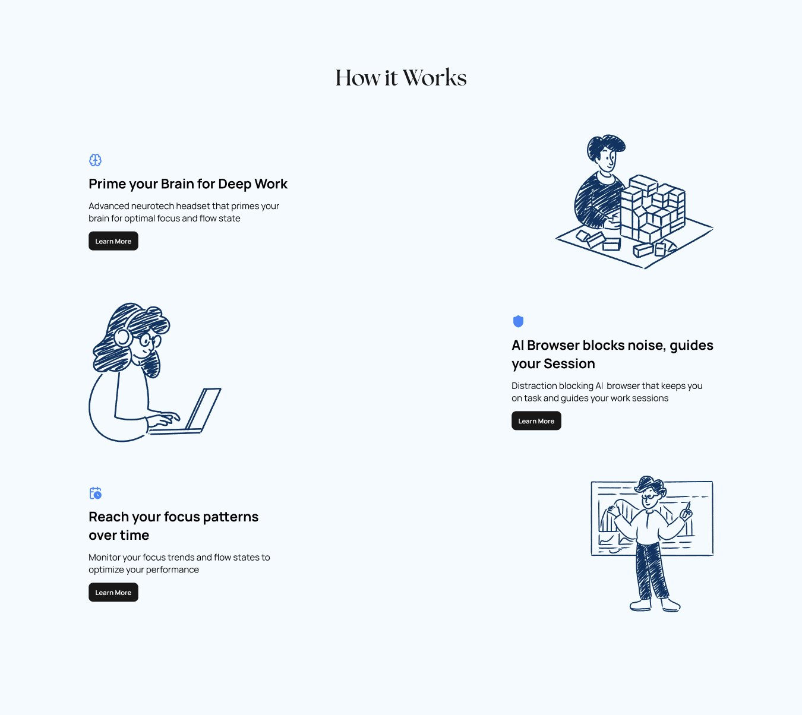
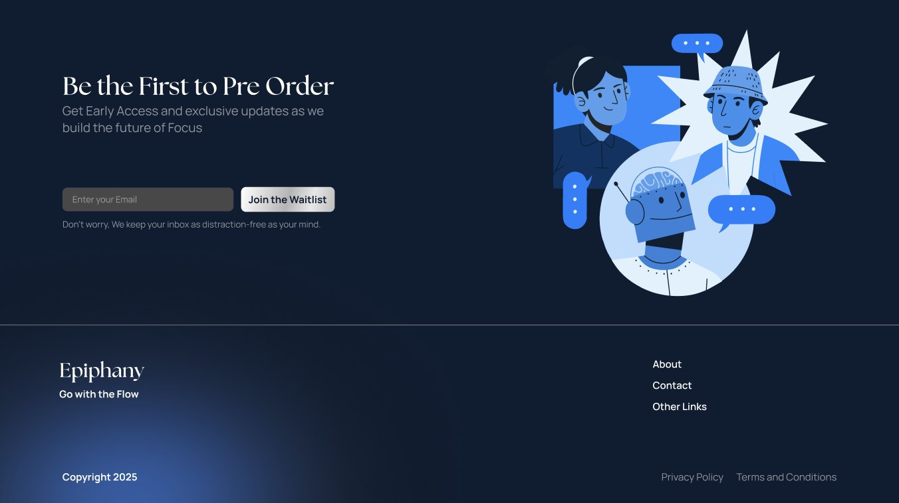
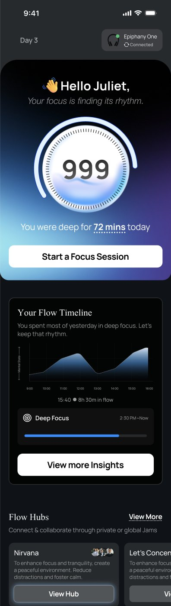
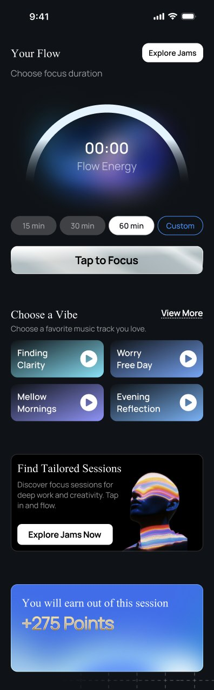
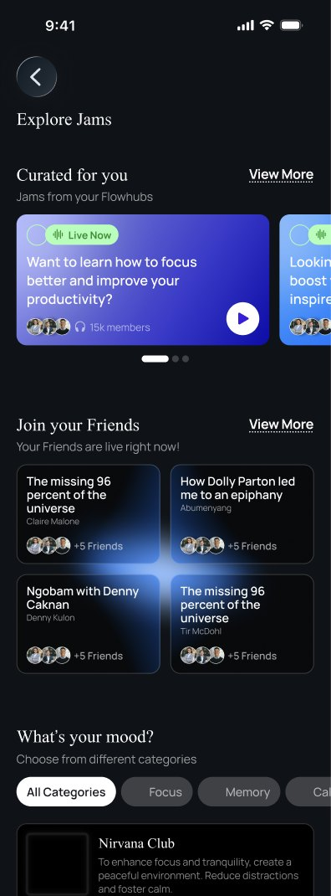
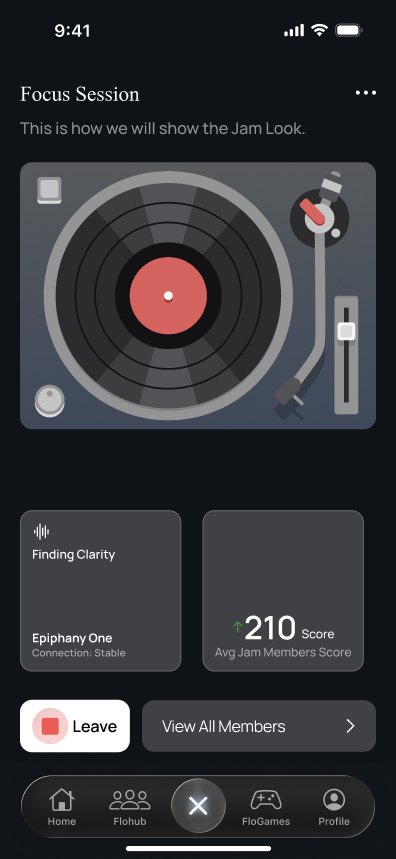
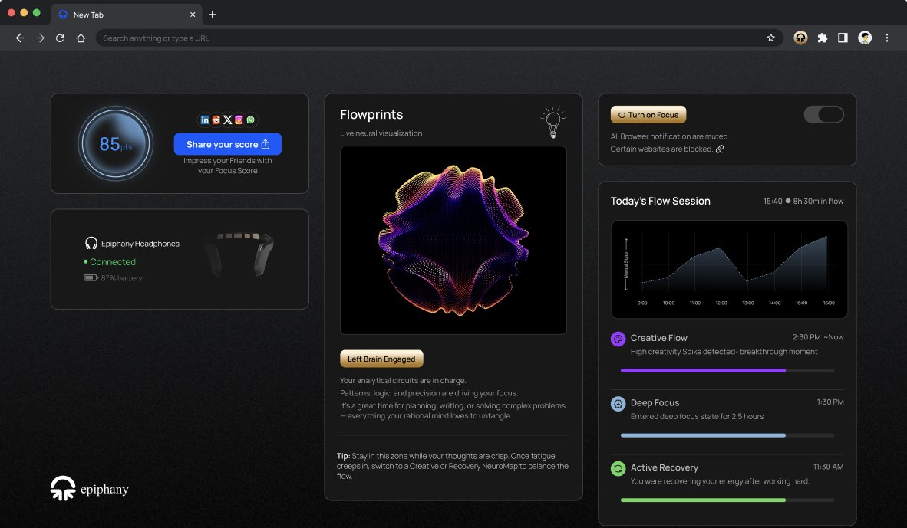
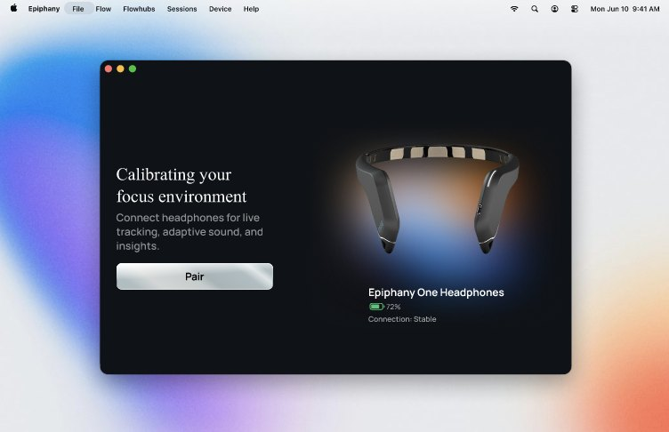

Case 02 · Epiphany, 2025 to 2026
Whoop for
your brain.
A headset and an app for getting into deep focus on demand, and tracking it over time.

- Role
- Co‑Founder & COO
- When
- Jul 2025 to Jul 2026
- My part
- Brand, waitlist site, mobile app design
- Status
- On pause
Epiphany started as research with a friend and turned into a company: a wearable that primes your brain for focus, paired with software that keeps you there. Alongside running operations, I designed the brand, the waitlist site, and the mobile app.
- 5,000people on the waitlist before launch
- $10Kraised from angels
- 3events: Lightspeed India, CES, Stanford EdTech Summit
How do you get 5,000 people to wait for a headset they can't try?
With a landing page that sold the vision before the hardware existed. It walked people through what the headset would do and what a session would feel like, then asked for an email. We took the same story on the road, to Lightspeed India, CES, and the Stanford EdTech Summit, and ran it through online channels.



What did testing change?
The whole idea of the app. Testing told us it needed to feel like a game and work like a tracker, something you check and want to improve. That is where "Whoop for your brain" came from.
We designed two additions for the mobile app. Flow games ease the transition into focus. Flow hubs let productivity creators lead sessions, the way a host leads a podcast.
Every session earns points and feeds a daily score, so there is always a number to beat.




One score, on every screen.
The same score follows you off the phone. The browser shows a live view of your focus and lets you share your score, and one switch mutes notifications and blocks distracting sites. The desktop app pairs the headset.


Why pause it?
To give the hard part more time. The hardware and the science behind it need more iteration than a launch schedule allows, and we would rather tinker than ship something half right. It is still a project we care about.
In the meantime it did a different job well. The waitlist was a real test of whether people are ready for focus tracking on their head, and 5,000 of them said yes.